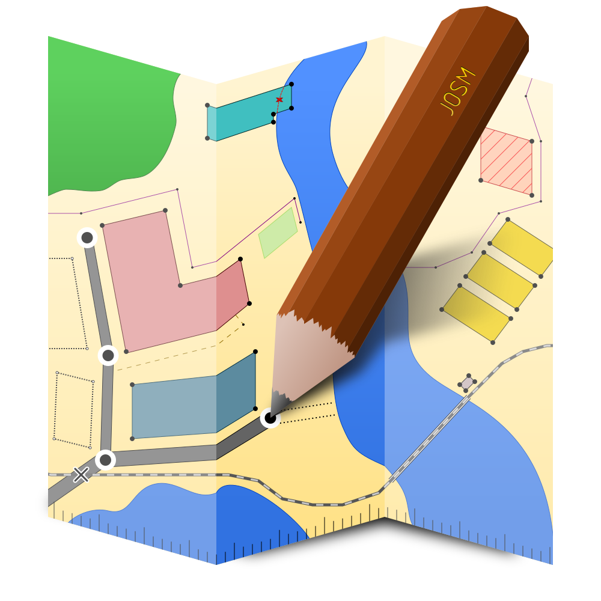

| NextBike uid | OSM id (closest match) | Distance (in meters) | Name NB | Name OSM | Ref NB | Ref OSM | Stands NB | Stands OSM | Network | Operator |
|---|---|---|---|---|---|---|---|---|---|---|
|
190503572
 |
10965045829 | 3 | Mokronos Górny PKP | Mokronos Górny PKP | 15304 | 15304 | 10 | NONE | Wrocławski Rower Miejski | NextBike |
| 190512283 | 10965045828 | 1 | Smolec | Smolec | 15305 | 15305 | 10 | NONE | Wrocławski Rower Miejski | NextBike |
| 540517286 | 10965045829 | 2214 | Stawowa / Wiśniowa Mokronos Dolny | Mokronos Górny PKP | 15315 | 15304 | 10 | NONE | Wrocławski Rower Miejski | NextBike |
| 540517297 | 10965045829 | 937 | Wrocławska / Spacerowa Mokronos Górny | Mokronos Górny PKP | 15316 | 15304 | 10 | NONE | Wrocławski Rower Miejski | NextBike |